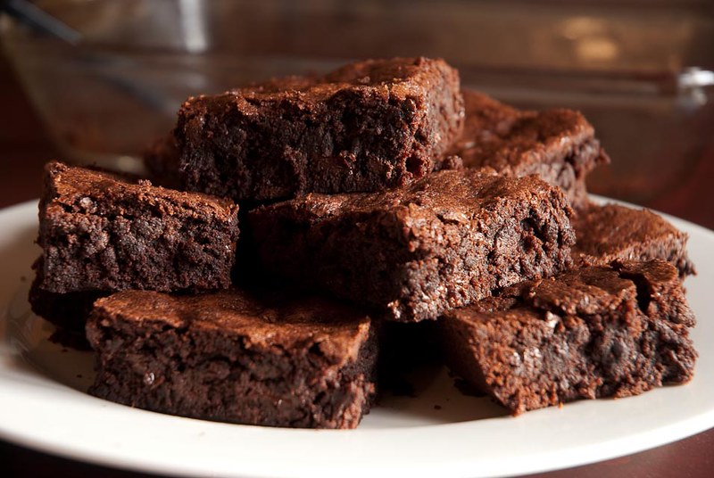

Chocolate Brownies

Description
Most of my memories of primary school include coming home to chocolate brownies for afternoon tea - my mum's special recipe. The secret ingredients? Dessicated coconut and condensed milk.
This recipe always lands well with my friends, so hopefully you enjoy it as well!
Ingredients
- 1 cup self-raising flour
- 1/2 cup brown sugar
- 1/2 cup dessicated coconut
- 2 tablespoons cocoa powder
- 400g condensed milk
- 2/3 cup melted butter
- 1/2 cup chocolate chips
- 2 teaspoons vanilla extract
Steps
- Pre-heat oven to 180 C and line a tray with baking paper.
- Place all dry ingredients in a bowl and mix.
- Add wet ingredients and chocolate chips. Mix well.
- Pour into the tin and cook for 25-30 minutes.
- Wait to cool, then enjoy!